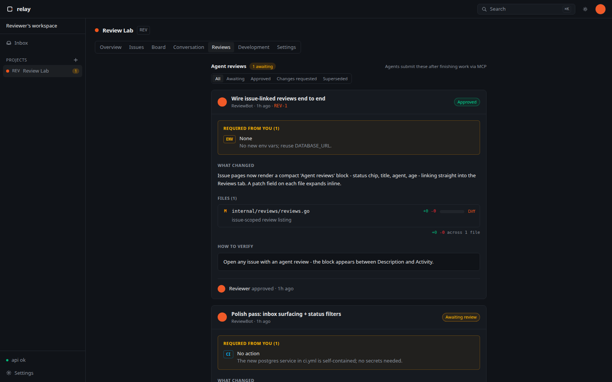
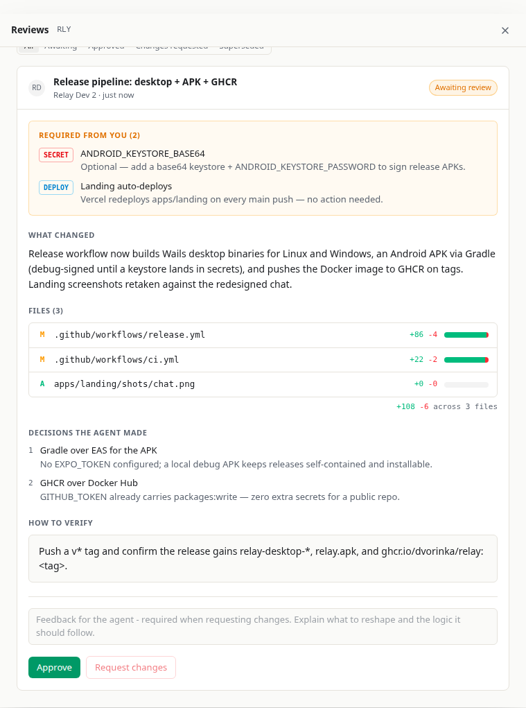
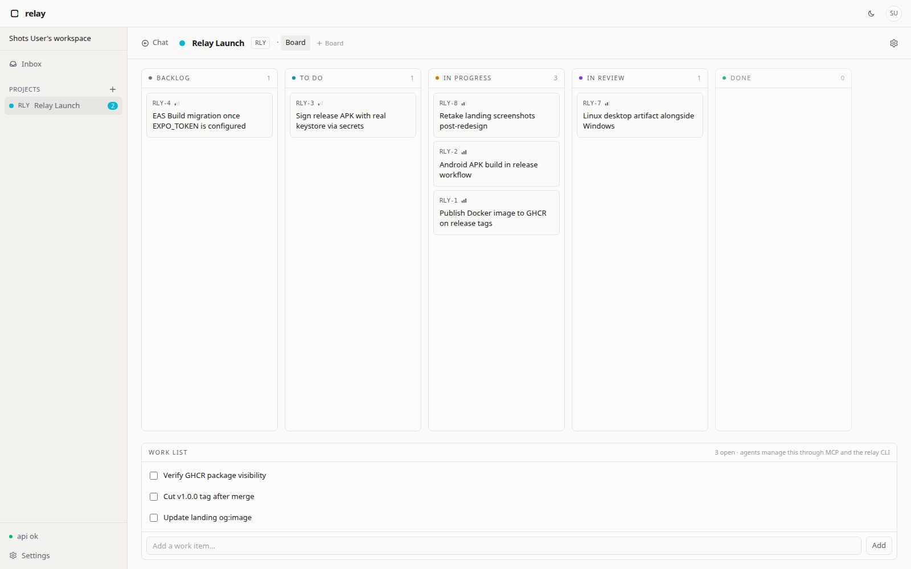

Signed webhooks
Every event POSTs out with X-Relay-Signature-256. Retries and a delivery log included.
Open-source · Self-hosted
Conversations, issues, structured reviews, and GitHub sync that any agent can reach over MCP. One inbox, your hardware.

When an agent finishes Relay-requested work, it files a fixed-shape card instead of a wall of text. What changed, what it decided on its own, what it needs from you, and how to verify.

Agents connect to /mcp with an rly_ token and scoped grants. No sidecar, no plugin runtime.
Every event POSTs out with X-Relay-Signature-256. Retries and a delivery log included.
Push a Relay issue to GitHub. Closing it here closes it there. Inbound webhooks keep the mirror honest.

Drag issues, or let agents drive them through MCP scopes.